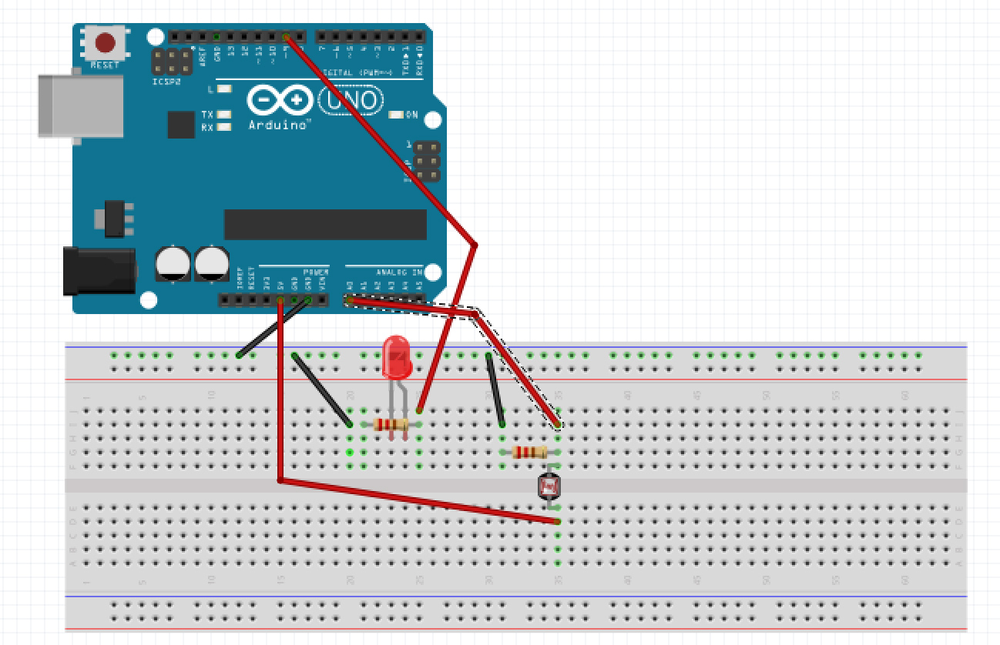
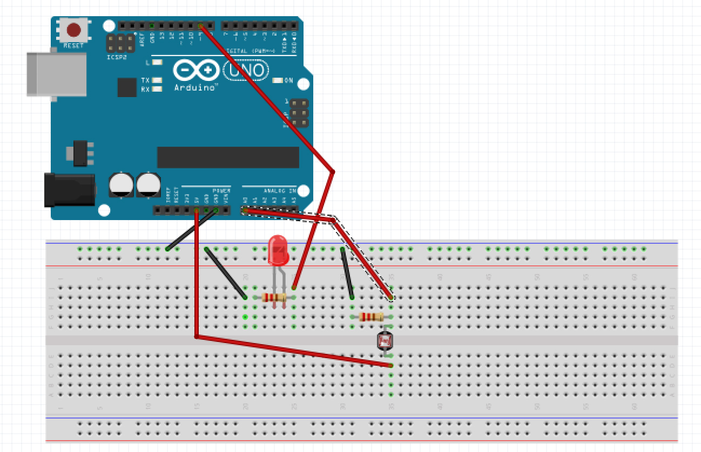
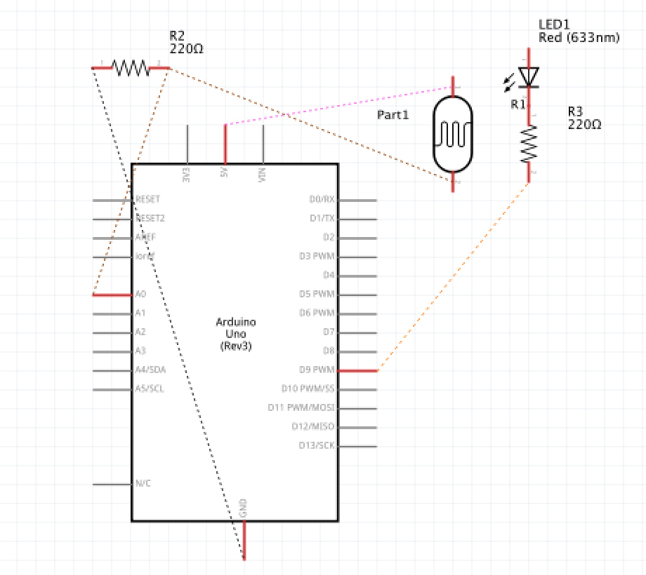
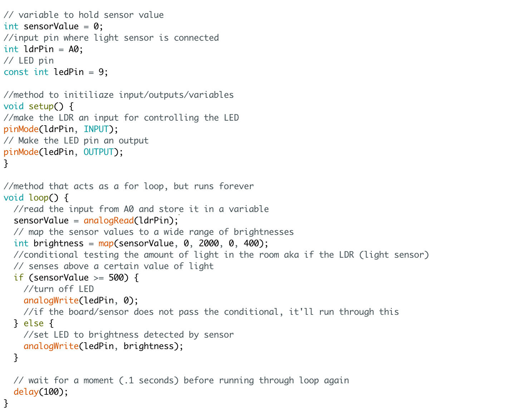

Assignment 3: Input Output!


Here is the LED changing brightness along with the brightness change for the sensor! When the LDR senses a lot of light (gif 2), the light turns off completely!
Circuit
 

Here is the circuit including an LDR (light dependent resistor) and an LED. I connected one leg of the LDR to 5V, one leg to ground and A0 using a 1k resistor (A0 is the input pin). I then connected an LED like in the previous assignment to pin 9 (used a 1k resistor) and the other leg to ground. I chose to use a 1k resistor to be safe, although the red LED would only require a 220 ohm resistor. The LDR will control the brightness of the LED with code.
Schematic
Here is a schematic showing the LDR connected to 5V and ground with a 1k resistor and the other leg to pin A0. I chose a 1k resistor because the data sheet showed the range of resistance can go up to 11k. I'm not using lights bright enough to reach that high, but I probably should've used a 10k resistor to be safe. The red lED is connected to pin 9 (PWM so it can vary in brightness) through a 1k resistor (voltage drop = 1.8V; V = IR; 5v-1.8V = 20mA x R; 3.2V/.02A = 160 ohms; used 1k to be safe) and the other leg to ground.
Code
The code for this circuit allows the LDR on pin A0 to control the LED on pin 9. When the light sensor senses a very high amount of light, the LED is turned off using analogWrite. When the light is not very high, the LED mirrors the brightness value sensed by the LDR.